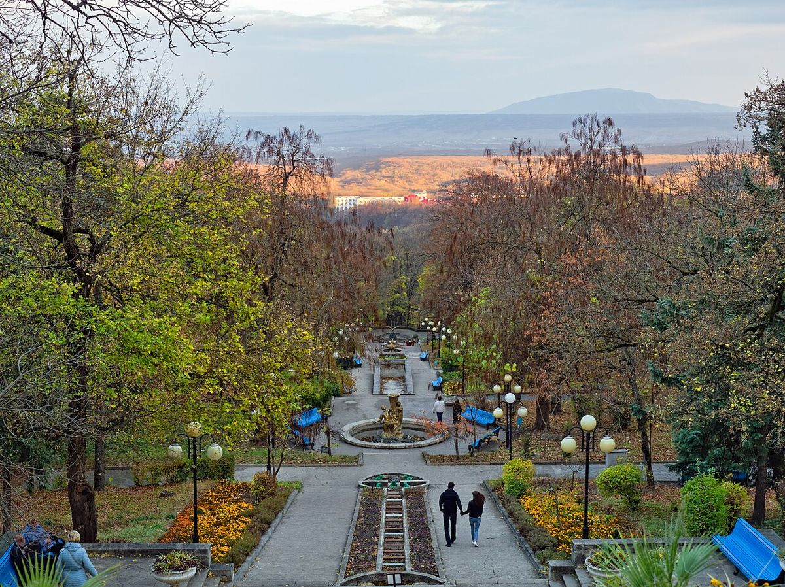
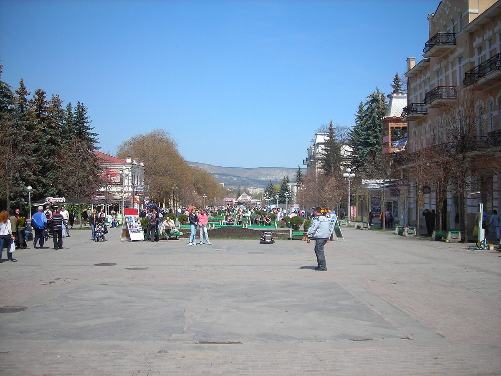

Отправить маму в санаторий: что проверить, прежде чем покупать путёвку пожилым родителям
Разговор обычно начинается одинаково: «Мне ничего не надо, я и дома полечусь». А заканчивается списком вопросов, на которые взрослым детям приходится отвечать за двоих. Где лифт? Далеко ли до столовой? Кто поможет, если ночью подскочит давление? Санаторий для пожилого человека выбирают не по фотографиям бассейна, а по десятку бытовых мелочей.
Коротко: курорт выбирает врач по диагнозу, а санаторий — вы, по быту. Проверьте рельеф вокруг, лифт и тёплые переходы, круглосуточный медпост, диетическое питание и путь до бювета. Оформите карту 072/у дома и продумайте дорогу без пересадок.

Город — по рельефу, а не по славе
Кисловодск знаменит климатом, но это город на холмах: путь к Курортному парку часто идёт в гору, а высота в первые дни ощутима для сердца. Ессентуки заметно ровнее — для людей с больными коленями или после эндопротезирования это весомый аргумент. Железноводск стоит на склонах горы Железной, и расстояние от корпуса до источника здесь лучше проверить заранее. Пятигорск — большой город, где многое зависит от конкретного адреса санатория.
Выбор курорта делает врач по диагнозу, а среди подходящих вариантов уже стоит учитывать, сколько ступенек отделяет человека от бювета.
Что проверить в самом санатории
- Лифт и тёплые переходы. Процедуры, столовая и номер должны быть связаны так, чтобы после ванны не выходить на улицу.
- Круглосуточный медицинский пост. Это вопрос не комфорта, а безопасности.
- Питание. Диетический стол, возможность заказать блюда и не стоять в очереди у шведской линии с подносом.
- Номер. Поручни в санузле, душ вместо высокой ванны, кровать нормальной высоты.
- Расстояния. Сколько метров до лечебного корпуса и до бювета — в описании это пишут редко, но спросить можно всегда.

Документы и лекарства
Санаторно-курортную карту (форма 072/у) лучше оформить дома, у врача, который знает историю болезни. Положите в папку свежие выписки, ЭКГ, список препаратов с дозировками. Лекарств возьмите с запасом на весь срок и ещё несколько дней: искать привычный препарат в незнакомом городе тяжело.
Предупредите родителей, что в первые дни лечения бывает усталость или обострение — так называемая бальнеореакция. Это повод сказать врачу, а не уехать домой раньше времени.
Дорога и связь
Для пожилого человека дорога порой утомительнее самого лечения. Поезд до конечной станции без пересадок или встреча в аэропорту снимают половину стресса. Договоритесь о простом ритме связи: звонок после приёма врача в первый день и вечерний короткий разговор. Если родители едут вдвоём, это заметно упрощает всё остальное.
С чего начать
Сузить круг поможет каталог, где у санаториев указаны лифты, переходы, профиль и отзывы. В Кисловодске, например, пенсионеров принимают «Белая Дача», «Нарзан», «Пикет», «Радуга». На Курортеке собраны здравницы всех четырёх курортов КМВ с ценами на 2026–2027 годы, а менеджер бесплатно подбирает варианты под возраст, диагноз и даты — с клиентами из любого региона России работают по телефону.
Хороший санаторий для родителей — тот, о котором они через неделю говорят «а тут, оказывается, неплохо». Обычно это значит, что вы заранее подумали о ступеньках.